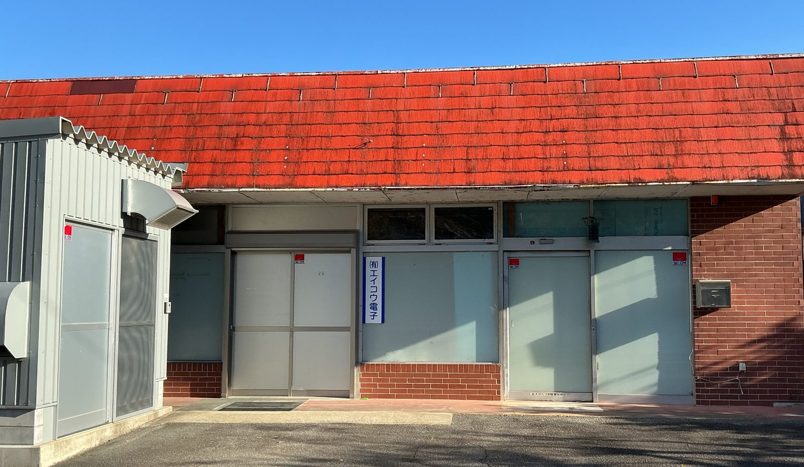
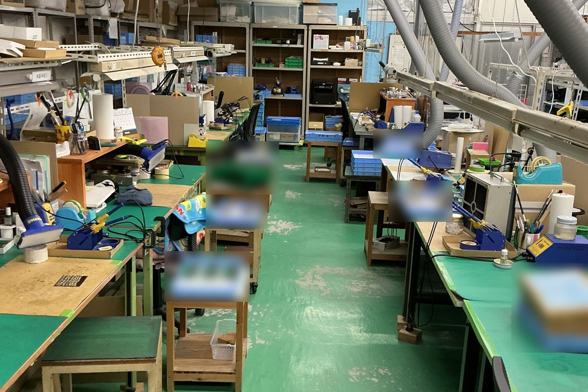
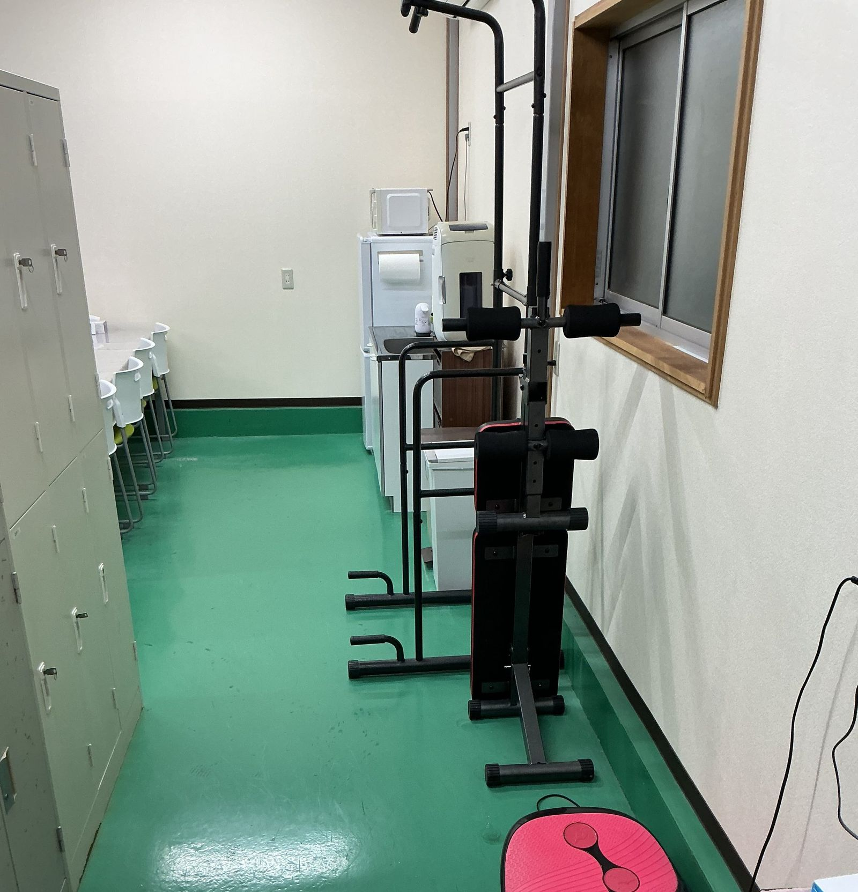
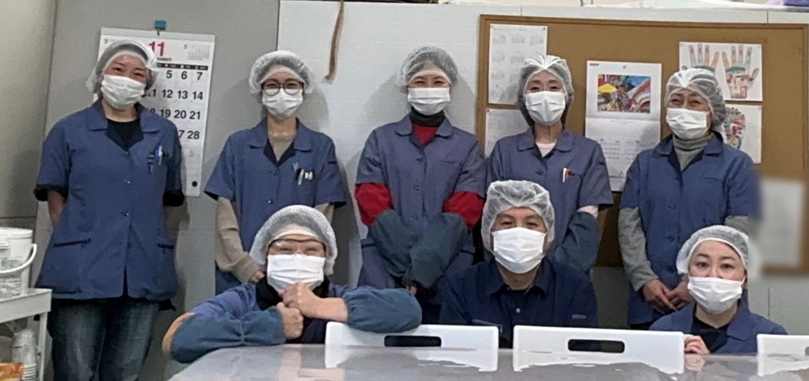

ここから先は、
実物を見に来てください。
これからの工場を一緒につくってくれる方を待っています。倍率をいくら上げても、職場の空気までは写りません。まずは見学から。お電話は代表の関口が受けます。
職場見学・応募のお電話0478-55-8950×1
まずは外から
「あそこは何をやっている会社なんだろう」。佐原に住んでいる方から、よくそう聞かれます。
エイコウ電子は、テレビなどをつくる装置の中に入る電子基板をつくっている工場です。ハーネス（配線の束）の加工や基板の半田付け、洗浄、検査を、代表の関口とパートスタッフ7名で続けています。佐原駅からは歩いて10分ほどです。

赤い屋根が目印です。

中に入ると、作業台が並んでいます。
×4
仕事の中身
扱うのは小ロット・多品種の製品。毎日同じものを大量に流すのではなく、いろいろな製品をみんなで仕上げていきます。最初から全部できる必要はありません。できる作業をひとつずつ増やしていきます。
自分がつくっている基板が何になるのか。分かる範囲で、できるだけ説明するようにしています。これまでには、新幹線に使われる基板、クレーンゲーム機の配線、飛行機が着陸するときの誘導灯の部品も手がけました。いまは産業機器が中心で、AIやデータセンターに関わる仕事にも携わっています。お子さんが興味を持ったら、保護者がどんなところで働いているのかを見てもらう、工場見学のようなこともしています。

お客様から直接いただいている仕事で、開発段階の試作も任されています。導入した機械はお客様のところにもない設備で、その工程はうちでしかできません。1年先までの予定も、おおよそ見えています。取引先はほぼ1社なので、仕事同士がぶつかって慌ただしくなることも多くありません。
×10
働き方
9:00朝礼
9:00の朝礼にいてくれれば大丈夫です（用事のある日は別です）。30分早く帰りたい日は、30分早く来る。朝ばたばたした日は、15分遅く来て15分遅く帰る。それで同じだけ稼げます。子どもの年齢によって朝の忙しさは違う、とパートさんたちから聞いて決めたやり方です。
1行
授業参観も、子どもの通院も。代表がすべての作業に入れるので、1人2人の急な休みはカバーできます。「休みたいと言われたら断れないので、何とかなるでしょ」というのが代表の考えです。毎週3日4日休みたい、3〜4人が同じ日に休みたい、という場合だけご相談ください。
80分
10:00と14:55に10分ずつ、お昼は12:00から1時間。全員が同じ時間に休みます。
17:20か 18:20
何時に帰るかを自分で決められるので、夕方からの予定が立てやすい職場です。
120日
年末年始・お盆・ゴールデンウィークも休みです。転勤もありません。
1分
以前は駐車場が遠かったのですが、いまは会社から歩いて1分のところに作りました。小見川から車で25分ほどかけて通っているスタッフもいます。佐原駅からは歩いて約10分です。
1,380円
募集時の時給は1,240円。そこから上がっていきます。設備への投資があと5年ほどで一段落する計画で、そのぶんを賃金に回していく考えです。
パートさんの要望は、通ることが多い職場です。全部ではありません。費用に見合うか、みんなに必要かで決めています。

×20
ある1日
※時刻は実際のものです。作業の内容と順番は一例で、日によって変わります
×40
一緒に働く人

※ここはサンプルです。実際に働く先輩からのメッセージに差し替えます（お顔を出さない形にしています）
半田ごてを持ったのは入社してからです。最初は検査だけ、慣れてから半田付け、と少しずつ増やしてもらえました。
子どもの行事の日はカレンダーに書いておくだけ。誰かが急に休んだ日は、みんなで少しずつ早く来てカバーしています。
代表が同じ場所で一緒に手を動かしているので、分からないことをその場で聞けます。
この基板が何に使われるのかを教えてもらえるので、出来上がったときにうれしくなります。
×100
いちばん近くで。
代表・採用担当
もともと私は、この工場に修行に来た人間でした。来て1年半で、訳あって仕事を引き継ぐことになりました。そのまま続けて、来年で20年になります。
代表をしていますが、自分が代表だという感覚はあまりありません。私も作業者のひとりで、何かあれば表に出る、会社のやりくりをする、という役目を受け持っているだけだと思っています。上も下もなく、みんなと同じ目線で働いています。私に言いたいことは、わりと言える職場だと思います。会社でカブトムシを飼って、パートさんに怒られたりもしています。
人は1日の多くの時間を、寝ているか、仕事をしているかに使っています。どうせ働くなら、楽しく、やりがいを持って働いてほしい。会社を始めた頃は、製造業は女性に好まれる仕事ではないと思っていました。でも、いまいる人たちはものづくりを本当に楽しんでくれていて、出来上がったときの達成感も感じてくれています。
私には子どもがいないので、会社が子どものような感じで、育てていく感覚を楽しみながら働いています。私も世の中の定年の年齢に近づいてきましたので、私がいなくても仕事が進む工場に、早くしておきたい。私が引退したあとも仕事が続いていく道筋は、できています。今回の募集は、その先を一緒に担ってくれる人を迎えるためのものです。
応募のお電話も、見学のご案内も、私が対応します。香取市やその周辺にお住まいの方、家から通える会社で一緒に働きませんか。
代表・採用担当関口 哲也
×200
近すぎて
見えてしまうところ
入ってから「聞いていなかった」とならないように、先にお伝えしておきます。
※一部サンプルを含みます。実際に寄せられるご質問に合わせて差し替えます
大丈夫です。いま働いているスタッフも、ほとんどが未経験から始めています。資格も必要ありません。
働けます。朝の支度で遅れそうな日は15分遅く来て15分遅く帰る、といった調整ができます。行事や通院の日はカレンダーに書いてください。時短勤務のご相談もお受けします。
上がります。募集時は1,240円ですが、いま働いているスタッフの時給は1,280〜1,380円です。
検査、洗浄、組立、梱包など、作業にはいろいろな種類があります。まずは職場見学で実際の作業を見てみてください。
できます。会社から歩いて1分のところに駐車場があります。香取市内だけでなく、小見川から車で25分ほどかけて通っているスタッフもいます。電車の場合は、佐原駅から歩いて約10分です。
もちろんです。見てから決めていただくのが一番だと考えています。お電話でご希望の日時をお知らせください。
これからの工場を一緒につくってくれる方を待っています。倍率をいくら上げても、職場の空気までは写りません。まずは見学から。お電話は代表の関口が受けます。
職場見学・応募のお電話0478-55-8950